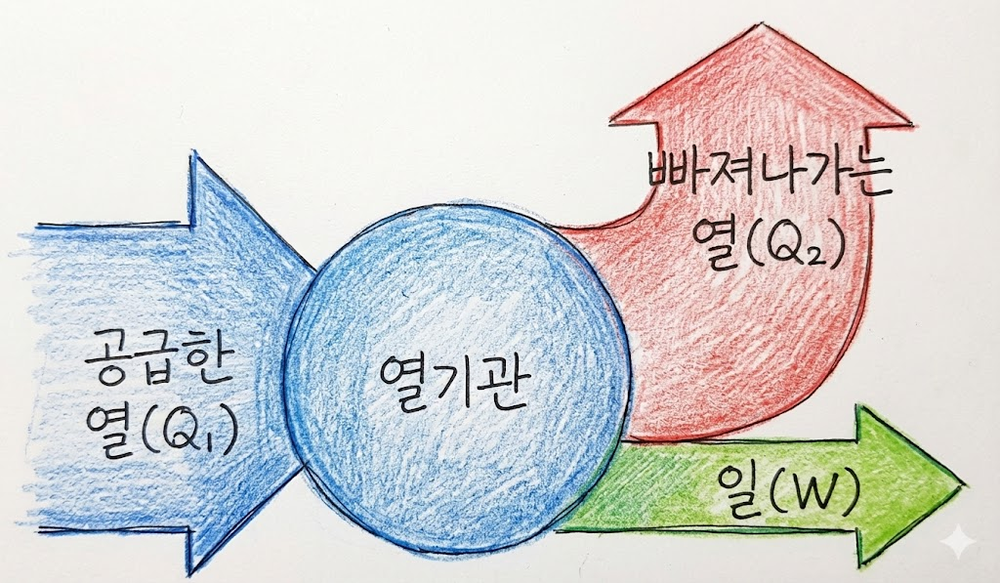

01. 에너지의 전환
- 정의:
한 형태의 에너지가 다른 형태의 에너지로 바뀌는 것. - 예시:
- 전구: 전기 E → 빛 E + 열 E
- 광합성: 빛 E → 화학 E
- 폭포: 위치(퍼텐셜) E → 운동 E
Self Check
Q. 배터리(전지) 충전 시 에너지 전환 과정은?
전기 E → 화학 E
02. 에너지 보존 법칙
- 법칙:
에너지는 전환될 뿐, 새로 생기거나 없어지지 않는다.
→ 전체 에너지 총량은 항상 일정. - 주의:
"에너지를 절약하자"는 말은 총량이 줄어서가 아니라, 사용 가능한 에너지가 줄어들기 때문임.
Self Check
Q. 에너지가 전환될 때 전체 에너지의 총량은?
일정하다 (변하지 않는다)
03. 열기관의 원리
- 정의:
화석 연료 등을 연소시켜 얻은 열에너지를 일(역학적 에너지)로 바꾸는 장치. (자동차 엔진, 증기 기관). - 에너지 흐름:
고열원(Q1) → 일(W) + 저열원(Q2, 방출).
Q1 = W + Q2

Self Check
Q. 열기관이 흡수한 열(Q1)은 일(W)과 무엇의 합인가?
방출한 열 (Q2)
04. 열효율 (e) 계산
- 공식:
열효율(e) =한 일(W)공급한 열(Q1)
에너지 효율(%) =유용하게 사용된 에너지공급한 에너지×100 - 한계:
열효율이 1 (100%)인 열기관은 만들 수 없다.
(반드시 방출되는 열 Q2 > 0 이기 때문).
Self Check
Q. 공급한 열이 100J, 방출한 열이 80J일 때 열효율은?
0.2 (20%)
05. 에너지 절약 기술
- 조명 효율:
백열등(5%) < 형광등(20%) < LED(30~50%).
(열로 낭비되는 에너지를 줄임). - 하이브리드 자동차:
엔진(석유) + 모터(전기) 병행.
감속 시 운동 E $\rightarrow$ 전기 E로 회수 (회생 제동).
Self Check
Q. 하이브리드 차에서 제동 시 버려지는 에너지를 전기로 회수하는 기술은?
회생 제동
06. 에너지 절약의 이유
- 가용성 감소:
에너지는 전환될 때마다 다시 사용하기 어려운 열에너지 형태로 흩어짐. - 지속 가능성:
화석 연료 고갈 대비 및 환경 오염 방지.
Self Check
Q. 에너지 전환 과정에서 최종적으로 흩어지는, 다시 쓰기 어려운 에너지 형태는?
열에너지